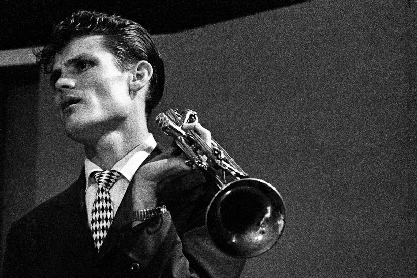

Hôm nay, ngày đầu tiên chính thức rời bỏ vị trí Trưởng phòng CNTT ở công ty mà mình tham gia từ buổi mới thành lập. Quãng thời gian đó (từ 2016 đến giờ), mình cũng ít viết blog hẳn để tập trung vào công việc. Ở đây, mình được trau dồi kỹ năng quản lý và làm việc nhóm nhiều hơn là kỹ năng cứng (lập trình, thiết kế). Âu cũng là duyên, hết duyên thì chúng ta nên dành những lời động viên cho nhau.
Tối hôm qua, mình có coi lại phim Whiplash. Thấy lại một phần câu chuyện của mình bên trong đó.
Terence Fletcher: "Thật ra thì, tôi không nghĩ mọi người hiểu tôi đã làm gì khi ở Shaffer. Tôi không ở đó để làm nhạc trưởng. Thằng ngu nào cũng có thể vẫy tay và chỉ huy ban nhạc chơi đúng nhịp. Tôi ở đó để thúc đẩy mọi người vượt xa hơn mong đợi ở họ. Tôi tin rằng đó là một điều cần thiết. Nếu không thì chúng ta sẽ bỏ qua một Louis Armstrong thứ hai, một Charlie Parker thứ hai. Tôi đã kể cho cậu làm sao Charlie Parker trở thành Charlie Parker, phải không?"
Andrew Neiman: "Jo Jones ném cái cymbal vào đầu ông ấy."
Terence Fletcher: "Chính xác! Parker từng là một đứa trẻ chơi saxophone rất tốt. Ông ta chơi một đoạn solo và chơi hỏng nó và Jones suýt nữa thì cắt phăng đầu ông ta đi, và ông bị chế giễu rất nhiều. Ông ấy khóc rất nhiều tối hôm đó. Nhưng vào sáng ngày tiếp theo, ông ta làm gì? Tập luyện. Tập luyện và tập luyện với một mục đích trong đầu, để không bao giờ bị chế giễu nữa. Và một năm sau, ông ta trở lại Reno và bước lên sân khấu ấy, và chơi đoạn solo hay nhất mà cả thế giới từng nghe. Thử tưởng tượng Jones chỉ nói: "Không sao đâu, Charlie. Cũng được mà, tốt lắm.!". Và Charlie nghĩ: "Mình thật sự chơi tốt đấy chứ". Hết chuyện. Không có Bird. Chuyện đó, đối với tôi là một thảm kịch. Nhưng đó là thứ mọi người muốn thời nay. Vậy mà mọi người cứ tự hỏi tại sao Jazz đang chết đi. Tôi nói với cậu, mọi album "Jazz" ở Starbuck đều chứng minh tôi nói đúng. Không có hai từ nào nguy hiểm hơn: "GOOD JOB!"."
Andrew Neiman: "Nhưng phải có một giới hạn chứ? Thầy biết đấy, đi quá giới hạn và làm nản lòng một Charlie Parker thứ hai trở thành Charlie Parker."
Terence Fletcher: "Không đâu, không. Bởi vì một Charlie Parker thứ hai sẽ không bao giờ nản lòng."
Đây là đoạn hội thoại mình thích nhất trong bộ phim. Nếu bạn xem phim này, có thể sẽ không đồng tình với cách của Fletcher. Tuy nhiên, ở một góc độ nào đó thì cần có những cú hích để chúng ta vượt ra khỏi vùng an toàn. Gần đây, mình có thử cách buông cho các bạn trong nhóm tự mày mò, tự đề xuất trong công việc. Mình thì ngồi chơi và quan sát. Nói vậy chứ vẫn suy nghĩ về chiến lược phát triển sản phẩm.
Có lẽ cách mình làm không phù hợp với thời điểm hiện tại. Giai đoạn này cần train người mới để chạy gấp các dự án mà mình làm như vậy. Quan điểm cá nhân, để có thể tập trung làm việc hết năng suất thì phải ổn định đội hình. Cần có những thử thách ban đầu để phát hiện những góc khuất của từng thành viên. Sau đó, tổng hợp lại rồi lên kế hoạch làm việc phù hợp cho từng người. Chuyện nó đến sớm hơn dự định của mình. Chưa kịp thực hiện thì bất đồng quan điểm với lãnh đạo cấp trên.
Đối với một vị trí nằm giữa các bạn trong nhóm và lãnh đạo cấp trên, nếu mình tâm sự với các bạn, đôi khi sẽ làm xuống tinh thần. Còn tâm sự với lãnh đạo cấp trên thì sẽ được coi là than vãn, bi quan. Thôi thì đành im lặng và thực hiện. Chỉ mong có người hiểu được.
Mình viết bài này để nhắc nhở về một bài học. Nó mất 2 năm để trải nghiệm, trả giá bằng cả sức khoẻ của mình. Hiện tại, bác sỹ chẩn đoán mình đang bị trầm cảm (F32). Các bạn có thể cùng chia sẻ kinh nghiệm và cũng như gợi ý để chúng ta làm việc với người xung quanh tốt hơn.
